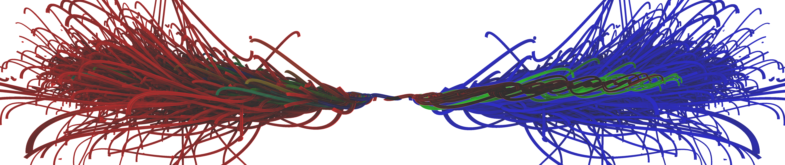
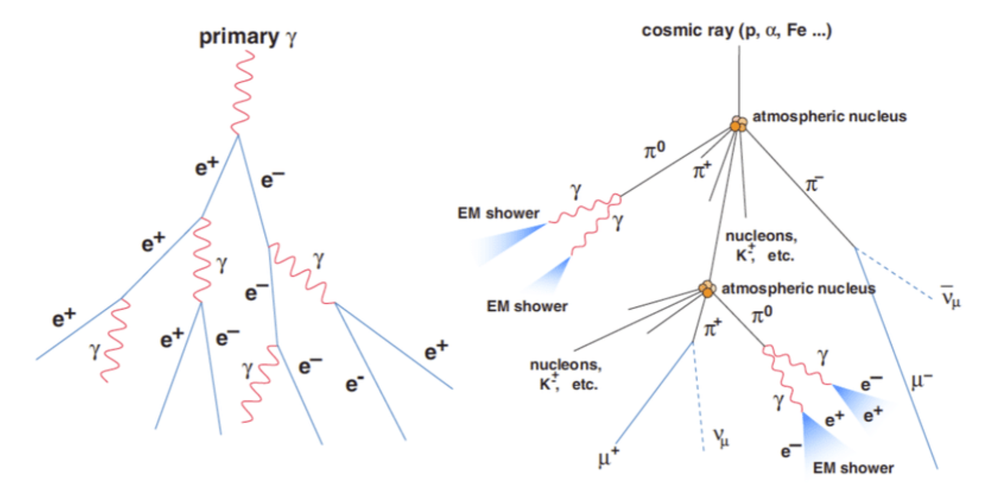

Thank you for participating. This study evaluates 3D visualization techniques for HGCal particle showers. It will take approximately 20 minutes.
Age:
Gender:
Role:
Familiarity with Particle Physics (1-7), where 1 is lowest and 7 is highest:
Familiarity with 3D Graphics/CAD (1-7), where 1 is lowest and 7 is highest:

Comparison of standard rendering (left) vs. Importance-Ordered Rendering (right).
Physics Context: Particle Showers
When a primary particle enters a detector like CERN's HGCal, it interacts with the material and produces a cascading tree of secondary particles—a shower. These simulated events are incredibly dense, packing thousands of trajectories into a small volume. The most physically significant tracks (the high-energy core) make up only a small fraction of the shower and are easily hidden behind a dense forest of low-energy particles.

Comparison of Electromagnetic Showers (left) vs. Hadronic Showers (right).
Hardware Requirement
This study requires a laptop or desktop computer and a physical mouse. Please do not attempt this study on a smartphone or tablet, as the 3D interface will not function correctly.
In this study, you will complete three types of tasks (T1, T2, T3) using 3D simulated particle showers. Please follow these interaction rules:
Click "Start Measured Trials" when you are ready to begin.
Ensure you are on a laptop or desktop and position your hand on the mouse. The timer will start immediately after the countdown.
Q1. The spatial layout was easy to understand (1-7), where 1 is lowest and 7 is highest:
Q2. The visual features helped me complete the tasks faster (1-7), where 1 is lowest and 7 is highest:
Q3. I felt confident in my selections (1-7), where 1 is lowest and 7 is highest:
Q4. Any additional comments? (Optional)
Participation code:
Thank you for your time, you may now safely close this window.